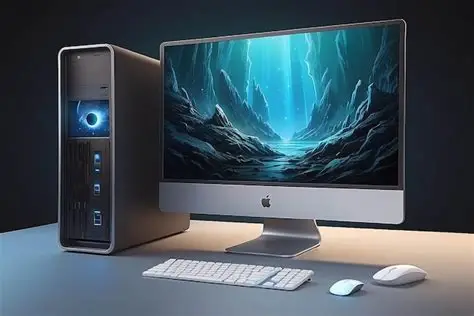

My First Blog Post

My name is Antwon Farquharson and I am a student at the University of the West Indies. I am currently learning web development, and this blog is part of my journey to becoming a better programmer. I enjoy learning new skills and challenging myself with projects that help me grow.
In my free time, I like to explore new technology, play video games, and spend time with friends. I believe that consistency and practice are the keys to success, and I try to apply that mindset to everything I do, especially my studies.